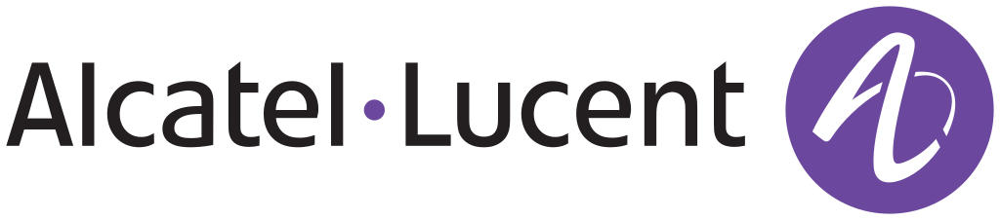
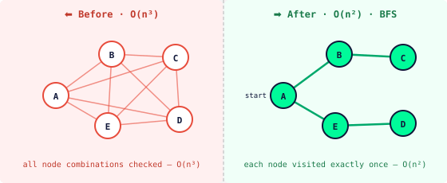
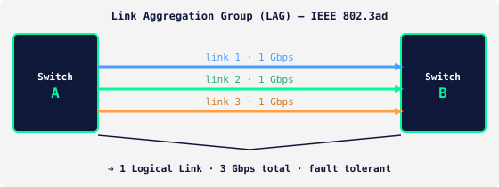

Professional Summary
=> Novartis
=> AISCO Firetrainer
=> Alcatel-Lucent (Nokia)
🕮 Books
🗪 Languages
♖ Hobbies
🖊 Creative Corner
⌨ Computer Science
Hi!
My name is PAOLO PANGRAZI, nice to "meet" you!
Welcome to my humble digital hub!
Technical Leader. Solution Architect. Software and Database Engineer.
Decade-proven enterprise experience
Telecom · Fire Training · Pharma
Patent holder
Clean code. Real impact.
I've designed enterprise software architectures at Novartis.
Optimized O(n³) algorithms down to O(n²) at Alcatel-Lucent Nokia.
Invented and built a patented fire training system from prototype to product launch.
I write code, review code, design systems, and mentor the people who do all three.
C, C++ · Java · Oracle · PL/SQL · MSSQL · PostgreSQL
Learning Ruby on Rails · Zig · Rust
AI · OpenCode · Claude
Happy Omarchy, Arch Linux user
Speaking and writing in German · English · Italian · Spanish
I love getting things done.
Constantly learning.
Learning Ruby on Rails · Zig · Rust
AI · OpenCode · Claude
Happy Omarchy, Arch Linux user
// INDEX.
// PROFESSIONAL SUMMARY.
// NOVARTIS
▸ 2008 — 2026
Summary
Getting things done.
Daily Activities
Innovation, Operations and Project Management
▪ Managing the Novartis full IP portfolio data lake (42k patents, 110k trademarks).
▪ Pro-active role in design, requirements analysis, and development of process optimizations and solutions for the IP Legal Operations PMO department.
▪ Driving and implementing innovation in IP & Legal Operations.
▪ Support audit activities and follow-up on remediation actions.
▪ Support with user account management activities and new reporting requirements from either the business or IT/ISRM.
▪ Ensuring and deploying project-related milestones and tasks.
▪ Technical and business consultancy for upcoming projects related to IP/Legal.
Acquisitions and divestments projects
▪ Data analysis, cleanup, verification and migration into IPMS for acquisitions and divestments projects.
▪ Documents, data and metadata verification, review and migration into IPMS according to business requirements.
IPMS System Functionality & Customization
▪ Technical consultant for Clarivate IPMS Memotech, enhancements, data analysis, design and customization (900 users, 10 sites).
▪ User requirements or functional specifications gathering.
▪ Design, development, testing, maintenance, monitoring, review and documentation of customized SQL / Oracle PL/SQL objects: packages, procedures, functions, scheduled jobs, pipelined functions, tables, views, triggers, etc. (107k lines of source code).
▪ Tools used: Toad, SQL Developer, SQL Plus.
Interfaces
▪ Design, development and maintenance of mono and bidirectional interfaces between heterogeneous systems for migration and transfer of IP matters within the Novartis systems landscape (for instance eBilling).
Reporting
▪ Direct and continuous business reporting with the trademarks and patents team stakeholders.
▪ Design and development of customized Intellectual Property portfolio reports.
▪ Design, development and maintenance of reports (database exports, csv, MS Office, Crystal, etc.).
▪ IPMS free queries/reports SQL development.
Performance & Technical Issue Resolution
▪ Resolution of performance issues related to the IPMS.
▪ Coordination and communication with software vendors and other operators (Clarivate, European Patent Office, WIPO, Swiss Patent and Trademarks Office) to resolve issues and bugs.
▪ Testing of new software components on the QA environment prior to deployment on production.
▪ Coordination and communication with providers prior to and during the installation of new/updated software releases.
Mass Communication & Document Generation
▪ Design of document and email templates (e.g., Order to file, Abandonment, CoverSheet, Renewal), including the development of related PL/SQL objects.
▪ Handling of the mass generation of emails, reports, portfolio reviews and updates to on average 320 agents.
Documentation & Compliance
▪ Creation and maintenance of relevant enterprise ICE / ISRM documentation, including functional specifications, design specifications, IQ, OQ, PQ, DO.
Migration Project from Memotech to Anaqua AQX
As a key contributor to the enterprise-wide migration of the Intellectual Property Management System (IPMS) from Clarivate Memotech to Anaqua AQX, I played a pivotal role in modernizing the Novartis IP portfolio operations over several years of hands-on expertise with the legacy platform. Leading technical efforts in a high-stakes project, I collaborated cross-functionally to ensure seamless data integrity, system interoperability, and enhanced reporting capabilities.
Activities:
▪ RFI and RFP technical core member
▪ Key member of the project core team
▪ Requirements gathering
▪ Business processes analysis
▪ Data migration business analyst
▪ Data migration quality checks
▪ Full migration of more than 50 Memotech custom reports (Oracle SQL => MSSQL SSRS)
▪ Full migration of document and email templates
▪ Development of hundreds of custom merge codes
▪ Technical consultancy
▪ Reporting and benchmarks
▪ Communication with vendor (Anaqua) and stakeholders (Novartis)
▪ Member of the "accelerators" team
Accomplishments
▸ 2023 - 2025 : Lead technical member of the successful IPMS migration project from Memotech to Anaqua AQX.
▸ 2020 - 2021 : Full automated trademarks maintenance monitoring process design and development.
Impact: An average of 120 emails are automatically dispatched each month, requiring no user intervention.
▸ 2019 : Design and development automated trademarks full portfolio renewal process batch processing.
Impact: Renewal process outcome fully automated and docketed, eliminating the need for manual checks and data entry.
▸ 2018 : Design and full-stack development interface e-filing with the Swiss Trademark Office.
Impact: full XML data preparation and generation without requiring user input.
▸ 2013 : Member of the Novartis IT team rewarded with the "NI IT & Group IGM Innovator Award 2013"
▸ Acquisitions & divestments: Alcon integration (2010-11), Alcon divestment (2018-19), Sandoz spin-off (2023-24)
Getting things done.
Daily Activities
Innovation, Operations and Project Management
▪ Managing the Novartis full IP portfolio data lake (42k patents, 110k trademarks).
▪ Pro-active role in design, requirements analysis, and development of process optimizations and solutions for the IP Legal Operations PMO department.
▪ Driving and implementing innovation in IP & Legal Operations.
▪ Support audit activities and follow-up on remediation actions.
▪ Support with user account management activities and new reporting requirements from either the business or IT/ISRM.
▪ Ensuring and deploying project-related milestones and tasks.
▪ Technical and business consultancy for upcoming projects related to IP/Legal.
Acquisitions and divestments projects
▪ Data analysis, cleanup, verification and migration into IPMS for acquisitions and divestments projects.
▪ Documents, data and metadata verification, review and migration into IPMS according to business requirements.
IPMS System Functionality & Customization
▪ Technical consultant for Clarivate IPMS Memotech, enhancements, data analysis, design and customization (900 users, 10 sites).
▪ User requirements or functional specifications gathering.
▪ Design, development, testing, maintenance, monitoring, review and documentation of customized SQL / Oracle PL/SQL objects: packages, procedures, functions, scheduled jobs, pipelined functions, tables, views, triggers, etc. (107k lines of source code).
▪ Tools used: Toad, SQL Developer, SQL Plus.
Interfaces
▪ Design, development and maintenance of mono and bidirectional interfaces between heterogeneous systems for migration and transfer of IP matters within the Novartis systems landscape (for instance eBilling).
Reporting
▪ Direct and continuous business reporting with the trademarks and patents team stakeholders.
▪ Design and development of customized Intellectual Property portfolio reports.
▪ Design, development and maintenance of reports (database exports, csv, MS Office, Crystal, etc.).
▪ IPMS free queries/reports SQL development.
Performance & Technical Issue Resolution
▪ Resolution of performance issues related to the IPMS.
▪ Coordination and communication with software vendors and other operators (Clarivate, European Patent Office, WIPO, Swiss Patent and Trademarks Office) to resolve issues and bugs.
▪ Testing of new software components on the QA environment prior to deployment on production.
▪ Coordination and communication with providers prior to and during the installation of new/updated software releases.
Mass Communication & Document Generation
▪ Design of document and email templates (e.g., Order to file, Abandonment, CoverSheet, Renewal), including the development of related PL/SQL objects.
▪ Handling of the mass generation of emails, reports, portfolio reviews and updates to on average 320 agents.
Documentation & Compliance
▪ Creation and maintenance of relevant enterprise ICE / ISRM documentation, including functional specifications, design specifications, IQ, OQ, PQ, DO.
Migration Project from Memotech to Anaqua AQX
As a key contributor to the enterprise-wide migration of the Intellectual Property Management System (IPMS) from Clarivate Memotech to Anaqua AQX, I played a pivotal role in modernizing the Novartis IP portfolio operations over several years of hands-on expertise with the legacy platform. Leading technical efforts in a high-stakes project, I collaborated cross-functionally to ensure seamless data integrity, system interoperability, and enhanced reporting capabilities.
Activities:
▪ RFI and RFP technical core member
▪ Key member of the project core team
▪ Requirements gathering
▪ Business processes analysis
▪ Data migration business analyst
▪ Data migration quality checks
▪ Full migration of more than 50 Memotech custom reports (Oracle SQL => MSSQL SSRS)
▪ Full migration of document and email templates
▪ Development of hundreds of custom merge codes
▪ Technical consultancy
▪ Reporting and benchmarks
▪ Communication with vendor (Anaqua) and stakeholders (Novartis)
▪ Member of the "accelerators" team
Accomplishments
▸ 2023 - 2025 : Lead technical member of the successful IPMS migration project from Memotech to Anaqua AQX.
▸ 2020 - 2021 : Full automated trademarks maintenance monitoring process design and development.
Impact: An average of 120 emails are automatically dispatched each month, requiring no user intervention.
▸ 2019 : Design and development automated trademarks full portfolio renewal process batch processing.
Impact: Renewal process outcome fully automated and docketed, eliminating the need for manual checks and data entry.
▸ 2018 : Design and full-stack development interface e-filing with the Swiss Trademark Office.
Impact: full XML data preparation and generation without requiring user input.
▸ 2013 : Member of the Novartis IT team rewarded with the "NI IT & Group IGM Innovator Award 2013"
▸ Acquisitions & divestments: Alcon integration (2010-11), Alcon divestment (2018-19), Sandoz spin-off (2023-24)
// AISCO Firetrainer
▸ 2020 — 2023
Summary
Hardware-Software Lead Architect, project management, design, invention and development of a digital software-based fire trainer system with top-notch modern graphics and realistic fire simulation, propagation and behaviour based on physics and particle systems laws. This product is designed to train companies, employees, and individuals on effectively managing various types of fires.
Tasks
▪ Business requirements gathering and brainstorming with the company executive board
▪ Full project execution and accountability, from the invention phase up to the final product launch
▪ RFI / RFP for selection external software development provider
▪ Leading the software development team as product owner
▪ Complete project planning, supervision and execution
▪ Management and alignment of financial budget
▪ Continuous interfacing and communication between business and technical hardware-software related activities
▪ Design and conception prototype (hardware and software-side)
▪ Hardware prototyping for the e-extinguishers
▪ Software use cases modeling
▪ Patent filing and granting process
▪ Brainstorming with vendor for fire and extinguishment software algorithms
▪ Ensuring project deliveries
▪ Project supervision up to the final product launch
Challenges
▸ A product that simply did not exist. There was no comparable solution on the market — no reference, no benchmark, no prior art to learn from. Every design decision had to be invented from scratch.
▸ "Build a VR system — without VR headsets." The executive brief was unambiguous: deliver full immersive training while keeping the hardware accessible. This meant achieving presence and depth perception through an unconventional approach, without falling back on standard head-mounted display technology.
▸ Two concurrent users, one shared environment. The system had to support two trainees operating independently and simultaneously within the same live simulation — each with their own e-extinguisher, their own physical interactions, and their own impact on the fire's behaviour.
▸ Real-time physics-based fire rendering — no shortcuts. Fire simulation had to be fully computed at runtime, driven by particle systems and fluid dynamics. Pre-rendered sequences or game-engine baked assets were ruled out: the fire had to respond authentically to the trainee's actions, frame by frame.
▸ Project started weeks before the COVID-19 pandemic. Hardware prototyping, cross-functional collaboration, and vendor coordination came to an abrupt halt as the world went into lockdown — the entire development workflow had to be reinvented on the fly, under pressure, with no playbook.
Accomplishments
▸ 2020 - patent granted: EP3795219
▸ 2023 - next generation fire trainer successfully launched: Indoor Fire Trainer
Hardware-Software Lead Architect, project management, design, invention and development of a digital software-based fire trainer system with top-notch modern graphics and realistic fire simulation, propagation and behaviour based on physics and particle systems laws. This product is designed to train companies, employees, and individuals on effectively managing various types of fires.
Tasks
▪ Business requirements gathering and brainstorming with the company executive board
▪ Full project execution and accountability, from the invention phase up to the final product launch
▪ RFI / RFP for selection external software development provider
▪ Leading the software development team as product owner
▪ Complete project planning, supervision and execution
▪ Management and alignment of financial budget
▪ Continuous interfacing and communication between business and technical hardware-software related activities
▪ Design and conception prototype (hardware and software-side)
▪ Hardware prototyping for the e-extinguishers
▪ Software use cases modeling
▪ Patent filing and granting process
▪ Brainstorming with vendor for fire and extinguishment software algorithms
▪ Ensuring project deliveries
▪ Project supervision up to the final product launch
Challenges
▸ A product that simply did not exist. There was no comparable solution on the market — no reference, no benchmark, no prior art to learn from. Every design decision had to be invented from scratch.
▸ "Build a VR system — without VR headsets." The executive brief was unambiguous: deliver full immersive training while keeping the hardware accessible. This meant achieving presence and depth perception through an unconventional approach, without falling back on standard head-mounted display technology.
▸ Two concurrent users, one shared environment. The system had to support two trainees operating independently and simultaneously within the same live simulation — each with their own e-extinguisher, their own physical interactions, and their own impact on the fire's behaviour.
▸ Real-time physics-based fire rendering — no shortcuts. Fire simulation had to be fully computed at runtime, driven by particle systems and fluid dynamics. Pre-rendered sequences or game-engine baked assets were ruled out: the fire had to respond authentically to the trainee's actions, frame by frame.
▸ Project started weeks before the COVID-19 pandemic. Hardware prototyping, cross-functional collaboration, and vendor coordination came to an abrupt halt as the world went into lockdown — the entire development workflow had to be reinvented on the fly, under pressure, with no playbook.
Accomplishments
▸ 2020 - patent granted: EP3795219
▸ 2023 - next generation fire trainer successfully launched: Indoor Fire Trainer
// ALCATEL-LUCENT (NOKIA)
▸ 2006 — 2008
Summary
Design, development and maintenance of C++ & Java software components within the Network Management System dedicated to the management of Ethernet over SDH networks and devices, especially about service provisioning, maintenance and performance monitoring in Metro Area Network environment.
Daily Activities
▪ Requirements and specifications analysis
▪ IBM Rational Rose UML modeling
▪ C++ & Java implementation in HP-Unix environment
▪ Java implementation of unit and integration tests
▪ KSH, BASH, Python UNIX scripting
▪ Development and maintenance middleware services CORBA TAO (C++), JACorb (Java)
▪ IBM Rational Clearcase configuration management
▪ English technical documentation drafting and review
Accomplishments
▸ C++ — SDH Network Topology Nodes Resynchronization
🔧 What. Full algorithmic redesign and C++ reimplementation of the network topology resynchronization engine inside the Network Management System for Ethernet over SDH.
⬅️ Before. The original algorithm visited the entire node topology using three nested
➡️ After. Complete rewrite using a customized BFS (Breadth-First Search) with a visited node set. Each node is processed exactly once. The triple nested loop collapses into two: one driving the BFS queue, one iterating each node's neighbors. Complexity: O(n²).
📈 Gain. 100% performance increase. Resynchronization time cut in half across the board.
Before — triple nested loop, O(n³):
▸ C++ implementation of Link Aggregation Protocol for SDH networks based on IEEE 802.3ad
What is Link Aggregation? Imagine you have four physical cables connecting two network devices. Normally only one is active — the others sit idle as backup. Link Aggregation bundles them all into a single logical link: the bandwidth adds up, and if one cable dies, traffic automatically flows through the remaining ones. More speed, zero single point of failure.
Why it matters: SDH networks are the backbone of telecom infrastructure — they carry voice, data, and critical services across cities. Downtime is not an option. Link Aggregation is a natural fit: it gives telecom operators both the bandwidth to handle growing traffic and the resilience to survive link failures without dropping a single call or packet. Implementing it at the Network Management System level means operators can configure, monitor, and control aggregated links across the entire Metro Area Network from a single place.
Design, development and maintenance of C++ & Java software components within the Network Management System dedicated to the management of Ethernet over SDH networks and devices, especially about service provisioning, maintenance and performance monitoring in Metro Area Network environment.
Daily Activities
▪ Requirements and specifications analysis
▪ IBM Rational Rose UML modeling
▪ C++ & Java implementation in HP-Unix environment
▪ Java implementation of unit and integration tests
▪ KSH, BASH, Python UNIX scripting
▪ Development and maintenance middleware services CORBA TAO (C++), JACorb (Java)
▪ IBM Rational Clearcase configuration management
▪ English technical documentation drafting and review
Accomplishments
▸ C++ — SDH Network Topology Nodes Resynchronization

🔧 What. Full algorithmic redesign and C++ reimplementation of the network topology resynchronization engine inside the Network Management System for Ethernet over SDH.
⬅️ Before. The original algorithm visited the entire node topology using three nested
for() loops — blindly examining every possible triplet of nodes, regardless of whether they had already been processed. Complexity: O(n³). As the number of managed network elements grew, execution time ballooned.➡️ After. Complete rewrite using a customized BFS (Breadth-First Search) with a visited node set. Each node is processed exactly once. The triple nested loop collapses into two: one driving the BFS queue, one iterating each node's neighbors. Complexity: O(n²).
📈 Gain. 100% performance increase. Resynchronization time cut in half across the board.
Before — triple nested loop, O(n³):
// Every triplet of nodes examined — O(n³)
for (int i = 0; i < nodes.size(); ++i) {
for (int j = 0; j < nodes.size(); ++j) {
for (int k = 0; k < nodes.size(); ++k) {
if (isConnected(nodes[i], nodes[j]) &&
isConnected(nodes[j], nodes[k])) {
resync(nodes[i], nodes[j], nodes[k]);
}
}
}
}
After — BFS with visited tracking, O(n²):// Each node visited exactly once — O(n²)
std::unordered_set<NodeId> visited;
std::queue<NodeId> queue;
queue.push(rootNode);
visited.insert(rootNode);
for (NodeId current; !queue.empty(); ) {
current = queue.front();
queue.pop();
for (NodeId neighbor : adjacencyList[current]) {
if (!visited.count(neighbor)) {
visited.insert(neighbor);
resync(current, neighbor);
queue.push(neighbor);
}
}
}
The key insight: by tracking which nodes had already been resynced, each node is processed exactly once. No redundant re-checks, no wasted traversals across the full node matrix. A straightforward idea — but only reachable after a complete algorithmic redesign from scratch.▸ C++ implementation of Link Aggregation Protocol for SDH networks based on IEEE 802.3ad

What is Link Aggregation? Imagine you have four physical cables connecting two network devices. Normally only one is active — the others sit idle as backup. Link Aggregation bundles them all into a single logical link: the bandwidth adds up, and if one cable dies, traffic automatically flows through the remaining ones. More speed, zero single point of failure.
Why it matters: SDH networks are the backbone of telecom infrastructure — they carry voice, data, and critical services across cities. Downtime is not an option. Link Aggregation is a natural fit: it gives telecom operators both the bandwidth to handle growing traffic and the resilience to survive link failures without dropping a single call or packet. Implementing it at the Network Management System level means operators can configure, monitor, and control aggregated links across the entire Metro Area Network from a single place.
Contact & Links: LinkedIn
// BOOKS.
I am an avid reader of anything that sparks my interest.
I usually read in the original language of the author, I believe that translation is a really hard job.
Nuances sometimes got unfortunately lost in the translation process, hence it is always a good idea to get the book in the original langauge.
I try to extend constantly my perspective and mindset reading about different topics and area:
▪ Psychology: every book of Robert Greene is a masterpiece.
▪ Design (product design, typography, UI/UX) - Recommendation: all books of Edward Tufte.
▪ Computer science - well, the list here is too long, maybe I will create an extra section for it.
▪ Historical books - Ken Follett, how to teach history from middle age down to modern history.
▪ Trading and market analysis - Elliot Wave Principle (Frost, Prechter)
These are (at the moment) my favourite books:
1. 1984 - George Orwell
2. The Pillars of the Earth - Ken Follett
3. Gödel, Escher, Bach: an Eternal Golden Braid - Douglas Hofstadter
Computer Science books have their own home now. → Computer Science Books & Literature
// LANGUAGES.
Even if italians are not well known for their fluency in foreign languages, I try to do my best to learn new languages.
Currently I can read, talk and write in the following languages:
Italian
German
English
Spanish
// HOBBIES.
Guitars and music of any form and type are following my life, starting back from the good 90s.
Music is not just music, it is art and therapy.
Electric Guitars
Ibanez RG 270 Black (sold)
Godin Freeway Classic (sold)
Ibanez MSM1
Ibanez UV70P
Fender Stratocaster JH
// CREATIVE CORNER.
// COMPUTER SCIENCE.
01 01 0101100101001 01 1 0 1 10 0101 11 001 0 1 01100 1001 010 1 11 0 0101 1100 10 01 001 1 0 1 010011 1 0 0101 1 00 1 010 110 01 0 1 001 1 0 11 010 0 1 01 0110010 1 00 1 01 1 001 01 0101100101001 01 1 0 1 10 0101 11 001 0 1 01100 1001 010 1 11 0 0101 1100 10 01 001 1 0 1 010011 1 0 0101 1 00 1 010 110 01 0 1 001 1 0 11 010 0 1 01 0110010 1 00 1 01 1 0
C. Raw. Fast. Unforgiving. Beautiful.
There is something deeply satisfying about writing code that runs close to the metal. No garbage collector whispering in the background. No framework doing the heavy lifting. Just you, the compiler, and the hardware.
LiAM — Like Another Mail — is a minimal multithreaded SMTP + POP3 mail server written entirely in C for Linux. No third-party libraries. No shortcuts. Built from scratch as a university assignment, it implements two foundational internet mail protocols right down to the RFC.
What's inside
▪ A full SMTP state machine (
▪ A POP3 server with authorization state, in-memory message index, and session-scoped deletion, RFC 1939 compliant
▪ Per-mailbox
▪ Flat mbox storage, temp files written during live SMTP sessions, credential files — all wired together by hand
▪ Two independent listener threads running side by side from a single process
Why C? Because C is humbling and rewarding in equal measure. You manage your own memory. You design your own abstractions. You understand every byte that moves across the wire. It is the language that taught me to think in systems — and every hour spent in it made me a sharper engineer in every other language too.
→ Full source on GitHub: paolopangrazi/liam
There is something deeply satisfying about writing code that runs close to the metal. No garbage collector whispering in the background. No framework doing the heavy lifting. Just you, the compiler, and the hardware.
LiAM — Like Another Mail — is a minimal multithreaded SMTP + POP3 mail server written entirely in C for Linux. No third-party libraries. No shortcuts. Built from scratch as a university assignment, it implements two foundational internet mail protocols right down to the RFC.
What's inside
▪ A full SMTP state machine (
HELO → MAIL FROM → RCPT TO → DATA → QUIT), RFC 5321 compliant▪ A POP3 server with authorization state, in-memory message index, and session-scoped deletion, RFC 1939 compliant
▪ Per-mailbox
pthread_mutex_t locking — two threads cannot touch the same mailbox simultaneously. No races. No corruption.▪ Flat mbox storage, temp files written during live SMTP sessions, credential files — all wired together by hand
▪ Two independent listener threads running side by side from a single process
Why C? Because C is humbling and rewarding in equal measure. You manage your own memory. You design your own abstractions. You understand every byte that moves across the wire. It is the language that taught me to think in systems — and every hour spent in it made me a sharper engineer in every other language too.
→ Full source on GitHub: paolopangrazi/liam
// Books & Literature.
 The C Programming Language — the real GOAT book for any serious software developer.
The C Programming Language — the real GOAT book for any serious software developer.
Algorithms — Dasgupta, Papadimitriou, V. Vazirani